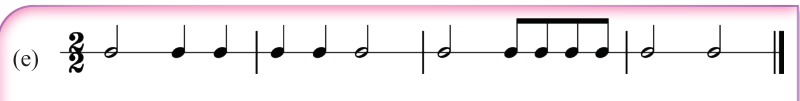
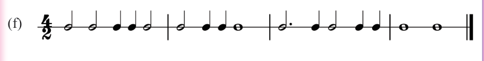
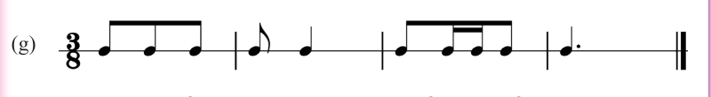
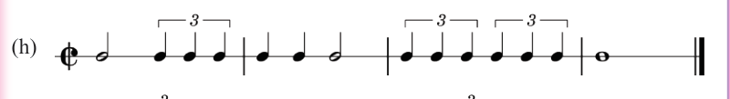
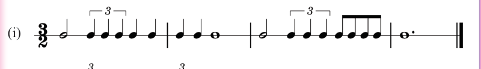
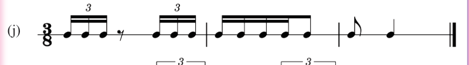
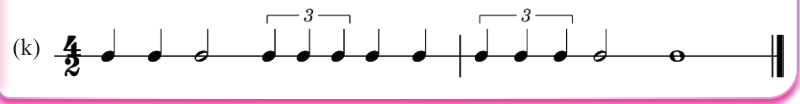
Note grouping
Note grouping involves arranging or organising notes and/or rests according to the given time signature. It involves beaming notes into groups or arranging the notes and rests correctly according to the time signature used. Note grouping is important in music as it simplifies reading written music.
Rules in note grouping
These are principles that guide musicians in grouping notes so the music is easier to read and play. They depend on the time signature, which indicates how many beats are in each measure and how they are divided. When notes are grouped correctly, it is easier to see where each beat is and how the rhythm flows. This helps both the person writing the music and the person playing it to understand the music better. The following are examples of rules to observe when grouping notes in music writing:
(a) Do not beam across a bar line: Beaming takes place within the measure. If there is a note standing alone at the end of a measure, it should not be
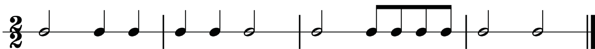
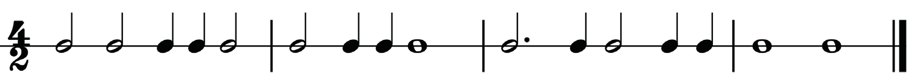
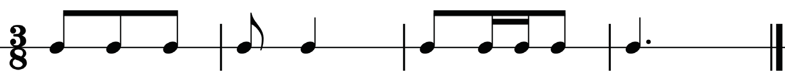
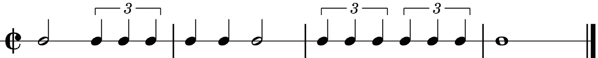
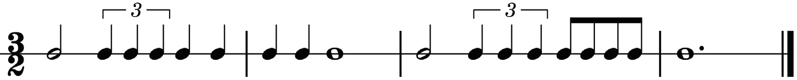
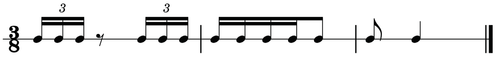
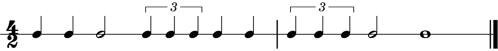